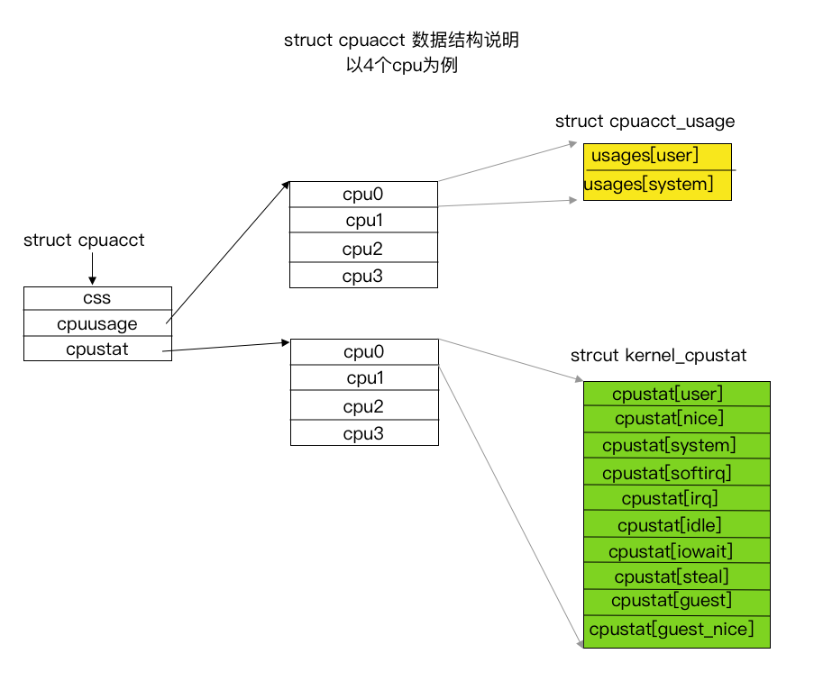

Cgroup之cpuacct子系统
Contents
cpuacct子系统（CPU accounting）会自动生成报告来显示cgroup中任务所使用的CPU资源，其中包括子群组任务。报告有两大类：
usage: 统计cgroup中进程使用CPU的时间，单位为纳秒。stat: 统计cgroup中进程使用CPU的时间，单位为USER_HZ。
注意：本文中引用的内核代码版本为
v5.2
统计文件示例
usage*
cpuacct.usage: 报告一个cgroup中所有任务（包括其子孙层级中的所有任务）使用CPU的总时间（纳秒）,该文件时可以写入0值的，用来进行重置统计信息。cpuacct.usage_percpu: 报告一个cgroup中所有任务（包括其子孙层级中的所有任务）在每个CPU使用CPU的时间（纳秒）。cpuacct.usage_user: 报告一个cgroup中所有任务（包括其子孙层级中的所有任务）使用用户态CPU的总时间（纳秒）。cpuacct.usage_percpu_user报告一个cgroup中所有任务（包括其子孙层级中的所有任务）在每个CPU上使用用户态CPU的时间（纳秒）。cpuacct.usage_sys: 报告一个cgroup中所有任务（包括其子孙层级中的所有任务）使用内核态CPU的总时间（纳秒）。cpuacct.usage_percpu_sys：报告一个cgroup中所有任务（包括其子孙层级中的所有任务）在每个CPU上使用内核态CPU的时间（纳秒）。cpuacct.usage_all：详细输出文件cpuacct.usage_percpu_user和cpuacct.usage_percpu_sys的内容。
stat
cpuacct.stat：报告cgroup的所有任务（包括其子孙层级中的所有任务）使用的用户和系统CPU时间，方式如下：user——用户模式中任务使用的CPU时间system——系统模式中任务使用的CPU时间- 其单位为
USER_HZ
示例
查看使用cpu的总时间
root@2d1230403171:~# cat /sys/fs/cgroup/cpuacct/cpuacct.usage
3907906171712
root@2d1230403171:~# cat /sys/fs/cgroup/cpuacct/cpuacct.usage_percpu
982052931576 496801928082 1119303415003 1309764865266
查看用户态和内核态的CPU时间
root@2d1230403171:~# cat /sys/fs/cgroup/cpuacct/cpuacct.usage_user
3907908045318
root@2d1230403171:~# cat /sys/fs/cgroup/cpuacct/cpuacct.usage_percpu_user
982051860949 496800539857 1119297079712 1309763110228
root@2d1230403171:~# cat /sys/fs/cgroup/cpuacct/cpuacct.usage_sys
0
root@2d1230403171:~# cat /sys/fs/cgroup/cpuacct/cpuacct.usage_percpu_user
982052487842 496801115881 1119301915660 1309764696892
查看cpuacct.usage_all
root@2d1230403171:~# cat /sys/fs/cgroup/cpuacct/cpuacct.usage_all
cpu user system
0 982052931576 0
1 496802375225 0
2 1119304751435 0
3 1309766189582 0
重置统计值
root@2d1230403171:~# echo 0 > /sys/fs/cgroup/cpuacct/cpuacct.usage
注意：需要有相应的权限才能重置。
查看stat
root@2d1230403171:~# cat /sys/fs/cgroup/cpuacct/cpuacct.stat
user 389913
system 403
Usage 和 Stat 到底有什么区别呢？
root@2d1230403171:~# cd /sys/fs/cgroup/cpuacct
root@2d1230403171:/sys/fs/cgroup/cpuacct# cat cpuacct.stat ; cat cpuacct.usage_user; cat cpuacct.usage_sys
user 124526
system 468815
4070860587371
354066574154
我们可以看到，stat中的user时间加上的system时间和cpuacct.usage_user的时间加上cpuacct.usage_sys的时间不相等。到底哪个比较精确呢？
cpuacct.usage 统计了所有 CPU 核的累加使用时间，单位是纳秒。在 cpuacct.stat 中统计了该控制组中进程用户态和内核态的CPU使用量，其单位是USER_HZ。
注意，相比 cpuacct.stat 来说，cpuacct.usage 的值会更加精确一些。
内核实现
结构体struct cpuacct
cpuacct的内核实现中，对cpu时间的统计结果都存放到数据结构struct cpuacct中，数据结构定义如下： kernel/sched/cpuacct.c(line 27-33)
/* track CPU usage of a group of tasks and its child groups */
struct cpuacct {
struct cgroup_subsys_state css;
/* cpuusage holds pointer to a u64-type object on every CPU */
struct cpuacct_usage __percpu *cpuusage;
struct kernel_cpustat __percpu *cpustat;
};
除了css外，其他两个成员都是__percpu类型。
cpuusge记录每个cpu使用的时间, 单位为纳秒cpustat记录每个cpu使用的用户和系统CPU时间，单位为USER_HZ
结构体 struct cpuacct_usage
数据结构定义如下： kernel/sched/cpuacct.c(line 10-25)
/* Time spent by the tasks of the CPU accounting group executing in ... */
enum cpuacct_stat_index {
CPUACCT_STAT_USER, /* ... user mode */
CPUACCT_STAT_SYSTEM, /* ... kernel mode */
CPUACCT_STAT_NSTATS,
};
static const char * const cpuacct_stat_desc[] = {
[CPUACCT_STAT_USER] = "user",
[CPUACCT_STAT_SYSTEM] = "system",
};
struct cpuacct_usage {
u64 usages[CPUACCT_STAT_NSTATS];
};
结构体 struct kernel_cpustat
数据结构定义如下： include/linux/kernel_stat.h(line 14-36)
/*
* 'kernel_stat.h' contains the definitions needed for doing
* some kernel statistics (CPU usage, context switches ...),
* used by rstatd/perfmeter
*/
enum cpu_usage_stat {
CPUTIME_USER,
CPUTIME_NICE,
CPUTIME_SYSTEM,
CPUTIME_SOFTIRQ,
CPUTIME_IRQ,
CPUTIME_IDLE,
CPUTIME_IOWAIT,
CPUTIME_STEAL,
CPUTIME_GUEST,
CPUTIME_GUEST_NICE,
NR_STATS,
};
struct kernel_cpustat {
u64 cpustat[NR_STATS];
};
cpuacct.stat中的统计时间主要来源于该结构体，其中
- user时间包括：CPUTIME_USER + CPUTIME_NICE
- system时间包括：CPUTIME_IRQ + CPUTIME_SOFTIRQ + CPUTIME_SYSTEM
变量root_cpuacct
定义如下： kernel/sched/cpuacct.c(line 51-55) 和 include/linux/kernel_stat.h
struct kernel_cpustat {
u64 cpustat[NR_STATS];
};
DECLARE_PER_CPU(struct kernel_cpustat, kernel_cpustat);
static DEFINE_PER_CPU(struct cpuacct_usage, root_cpuacct_cpuusage);
static struct cpuacct root_cpuacct = {
.cpustat = &kernel_cpustat,
.cpuusage = &root_cpuacct_cpuusage,
};
通过上面的数据结构分析，我们可以画出struct cpuacct的结构示意图：

/sys/fs/cgroup/cpuacct下所有统计文件就是通过cpuacct结构体中的统计值来输出信息的。
而cpu时间信息的更新则由如下函数完成( include/linux/cgroup.h(line 753-763) )。
cpuacct_charge
用于更新cpuusage( kernel/sched/cpuacct.c(line 333-353) ), 该函数更新所有的
cpuacct cgroup，包括根root cpuacct cgroup。
cpuacct_account_field
用于更新cpustat( kernel/sched/cpuacct.c(line 355-368) )，该函数更新所有的
cpuacct cgroup，但不包括root cpuacct cgroup。
那么哪些函数会调用cpuacct_charge呢？
如下函数会去调用cpuacct_charge:
update_curr(struct cfs_rq *cfs_rq)->cgroup_account_cputime->cpuacct_chargeupdate_curr_rt(struct rq *rq)->cgroup_account_cputime->cpuacct_chargeupdate_curr_dl(struct rq *rq)->cgroup_account_cputime->cpuacct_chargeput_prev_task_stop(struct rq *rq, struct task_struct *prev)->cgroup_account_cputime->cpuacct_charge
那么哪些函数会调用cpuacct_account_field呢？
如下函数会去调用cpuacct_account_field:
account_process_tick->account_user_time->task_group_account_field->cgroup_account_cputime_field->cpuacct_account_fieldirqtime_account_process_tick->account_user_time->task_group_account_field->cgroup_account_cputime_field->cpuacct_account_fieldvtime_user_exit->account_user_time->task_group_account_field->cgroup_account_cputime_field->cpuacct_account_fieldaccount_process_tick->account_system_time->account_system_index_time->task_group_account_field->cgroup_account_cputime_field->cpuacct_account_fieldirqtime_account_process_tick->account_system_index_time->task_group_account_field->cgroup_account_cputime_field->cpuacct_account_field__vtime_account_system->account_system_time->account_system_index_time->task_group_account_field->cgroup_account_cputime_field->cpuacct_account_field
除此之外，还有如下函数会更新cupstat
account_idle_timeaccount_steal_timeaccount_guest_time
总结一下
更新cpustat的接口有如下几个：
account_user_timeaccount_system_timeirqtime_account_process_tickaccount_idle_timeaccount_steal_timeaccount_guest_time
分析更新cpustat的接口实现
account_user_time
代码地址为： kernel/sched/cputime.c(line 112-132)
该接口根据task_nice(p)是否为真，更新CPUTIME_NICE或者CPUTIME_NICE
account_system_time
代码地址为： kernel/sched/cputime.c(line 178-201)
该接口根据不同的情况可能更新CPUTIME_IRQ 或者 CPUTIME_SOFTIRQ 或者 CPUTIME_SYSTEM
注意，该接口还有可能通过接口
account_guest_time进行时间的更新。
account_idle_time
代码地址为： kernel/sched/cputime.c(line 214-227)
该接口更新了CPUTIME_IDLE或者CPUTIME_IOWAIT，只更新了root cpuacct，即idle时间不是cgroup aware的。
account_steal_time
代码地址为： kernel/sched/cputime.c(line 203-212)
该接口更新了CPUTIME_STEAL，只更新了root cpuacct，即steal时间不是cgroup aware的。
account_guest_time
代码地址为： kernel/sched/cputime.c(line 134-156)
该接口根据task_nice(p)是否为真，更新CPUTIME_NICE and CPUTIME_GUEST_NICE或者CPUTIME_USER and CPUTIME_GUEST, 只更新了root cpuacct，即guest时间不是cgroup aware的。
其它相关问题
root cpuacct的数据来源？
root cpuacct cgroup中usage来源于变量root_cpuacct_cpuusage，在cpuacct_charge中会更新它的值。root cpuacct cgroup中cpustat来源于变量kernel_cpustat,cpuacct_account_field并不会更新它，而是有系统上其它部分去更新。
/proc/stat中cpu相关统计信息来自哪里？
/proc/stat中cpu相关统计数据来自于变量kernel_cpustat,这个跟root cpuacct cgroup的数据来源是一样的。
docker如何计算容器的cpu利用率？
docker容器的的cpu利用率计算公司如下：
(cpuuasge的delta值/墙上时间delta) * 100%
cpuuasge的delta值： 通过两次读取cpuacct.useage得到- 墙上时间
delta： 通过两地读取/proc/stat的第一行得到，由于该行的值为墙上时间*cpu核数，所以该值应该再除以cpu核数。